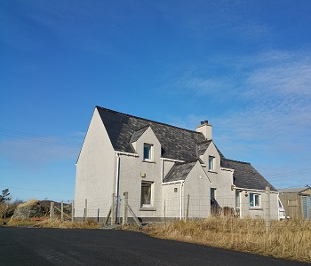

About Us
Welcome to Creagan Bed & Breakfast
Welcome to Creagan Bed & Breakfast
We your hosts are iain & Ceit Smith both born and brought up locally. We aim to make your stay as comfortable as possible to enhance the enjoyment of your holiday.
Creagan Bed and Breakfast newly opened in June 2014 and is situated in the village of Callanish on the west side of Lewis. We are centrally situated on the island making Creagan an ideal touring base.
Creagan boasts a double room and a twin room both with en suite shower rooms. Television and tea and coffee making facilities are available in both rooms and there is also internet access.
We have a guest lounge where you can chat and relax after a day's touring and watch television or read from our library of books. Alternatively you may prefer a leisurely walk around Callanish to appreciate the local scenery.
Callanish is home to the world famous Callanish Standing Stones and the Callanish Visitor Centre provides invaluable insights into the hisory of the Stones along with providing food and refreshments. Bicycle and kayak hire is also available locally and for the keen fisherman there are also fishing kayaks which can be used on the lochs.
Creagan is within easy walking distance of the Standing Stones and there are many spectacular views to appreciate as you walk. There are plenty tourist attactions in Lewis all easily accessible from Callanish such as the Doune Broch, the Gearranan Blackhouse Village, the Harris tweed making display at Carloway , the Whalebone Arch at Bragar to name but a few of the sights.